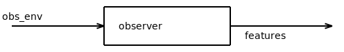
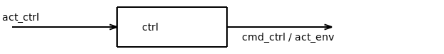

Block¶
This method gathers base implementations for blocks to be used in pipeline control design.
It implements:
the concept of block that can be connected to a BaseJiminyEnv environment through any level of indirection
the base controller block
the base observer block
- class gym_jiminy.common.bases.block_bases.BlockInterface(env, update_ratio=1, **kwargs)[source]¶
Bases:
objectBase class for blocks used for pipeline control design.
Block can be either observers and controllers. A block can be connected to any number of subsequent blocks, or directly to a BaseJiminyEnv environment.
Initialize the block interface.
It only allocates some attributes.
- Parameters
env (gym_jiminy.common.envs.env_generic.BaseJiminyEnv) – Environment to ultimately control, ie completely unwrapped.
update_ratio (int) – Ratio between the update period of the high-level controller and the one of the subsequent lower-level controller.
kwargs (Any) – Extra keyword arguments that may be useful for mixing multiple inheritance through multiple inheritance.
- Return type
- observation_space: Optional[gym.spaces.space.Space]¶
- action_space: Optional[gym.spaces.space.Space]¶
- _setup()[source]¶
Reset the internal state of the block.
Note
The environment itself is not necessarily directly connected to this block since it may actually be connected through another block instead.
Note
It is possible to update the configuration of the simulator, for example to register some extra variables to monitor the internal state of the block.
- Return type
- class gym_jiminy.common.bases.block_bases.BaseObserverBlock(*args, **kwargs)[source]¶
Bases:
gym_jiminy.common.bases.generic_bases.ObserverInterface,gym_jiminy.common.bases.block_bases.BlockInterfaceBase class to implement observe that can be used compute observation features of a BaseJiminyEnv environment, through any number of lower-level observer.
Formally, an observer is a defined as a block mapping the observation space of the preceding observer, if any, and directly the one of the environment ‘obs_env’, to any observation space ‘features’. It is more generic than estimating the state of the robot.
The update period of the observer is the same than the simulation timestep of the environment for now.
- Parameters
kwargs (Any) – Extra keyword arguments that may be useful for dervied observer with multiple inheritance, and to allow automatic pipeline wrapper generation.
args (Any) –
- Return type
- _refresh_action_space()[source]¶
Configure the action space of the observer.
It does nothing but to return the action space of the environment since it is only affecting the observation space.
Warning
This method that must not be overloaded. If one need to overload it, then using BaseControllerBlock or BlockInterface directly is probably the way to go.
- Return type
- _setup()[source]¶
Reset the internal state of the block.
Note
The environment itself is not necessarily directly connected to this block since it may actually be connected through another block instead.
Note
It is possible to update the configuration of the simulator, for example to register some extra variables to monitor the internal state of the block.
- Return type
- refresh_observation(measure)[source]¶
Compute observed features based on the current simulation state and lower-level measure.
- get_observation()¶
Get post-processed observation.
By default, it does not perform any post-processing. One is responsible for clipping the observation if necessary to make sure it does not violate the lower and upper bounds. This can be done either by overloading this method, or in the case of pipeline design, by adding a clipping observation block at the very end.
Warning
In most cases, it is not necessary to overloaded this method, and doing so may lead to unexpected behavior if not done carefully.
- observation_space: Optional[gym.spaces.space.Space]¶
- _observation: Optional[Union[Dict[str, Union[Dict[str, SpaceDictNested], numpy.ndarray]], numpy.ndarray]]¶
- action_space: Optional[gym.spaces.space.Space]¶
{kind=link}
- class gym_jiminy.common.bases.block_bases.BaseControllerBlock(*args, **kwargs)[source]¶
Bases:
gym_jiminy.common.bases.generic_bases.ControllerInterface,gym_jiminy.common.bases.block_bases.BlockInterfaceBase class to implement controller that can be used compute targets to apply to the robot of a BaseJiminyEnv environment, through any number of lower-level controllers.
Formally, a controller is defined as a block mapping any action space ‘act_ctrl’ to the action space of the subsequent controller ‘cmd_ctrl’, if any, and ultimately to the one of the associated environment ‘act_env’, ie the motors efforts to apply on the robot.
The update period of the controller must be higher than the control update period of the environment, but both can be infinite, ie time-continuous.
Note
The space in which the command must be contained is completely determined by the action space of the next block (another controller or the environment to ultimately control). Thus, it does not have to be defined explicitely.
On the contrary, the action space of the controller ‘action_ctrl’ is free and it is up to the user to define it.
- Parameters
args (Any) – Extra arguments that may be useful for mixing multiple inheritance through multiple inheritance, and to allow automatic pipeline wrapper generation.
kwargs (Any) – Extra keyword arguments. See ‘args’.
- Return type
- _refresh_observation_space()[source]¶
Configure the observation space of the controller.
It does nothing but to return the observation space of the environment since it is only affecting the action space.
Warning
This method that must not be overloaded. If one need to overload it, then using BaseObserverBlock or BlockInterface directly is probably the way to go.
- Return type
- _refresh_action_space()¶
Configure the action space of the controller.
Note
This method is called right after _setup, so that both the environment to control and the controller itself should be already initialized.
- Return type
- _setup()[source]¶
Configure the controller.
It includes:
refreshing the action space of the controller
allocating memory of the controller’s internal state and initializing it
Note
Note that the environment to ultimately control env has already been fully initialized at this point, so that each of its internal buffers is up-to-date, but the simulation is not running yet. As a result, it is still possible to update the configuration of the simulator, and for example, to register some extra variables to monitor the internal state of the controller.
- Return type
- compute_command(measure, action)¶
Compute the action to perform by the subsequent block, namely a lower-level controller, if any, or the environment to ultimately control, based on a given high-level action.
Note
The controller is supposed to be already fully configured whenever this method might be called. Thus it can only be called manually after reset. This method has to deal with the initialization of the internal state, but _setup method does so.
- compute_reward(*args, info, **kwargs)¶
Compute reward at current episode state.
See ControllerInterface.compute_reward for details.
Note
This method is called after updating the internal buffer ‘_num_steps_beyond_done’, which is None if the simulation is not done, 0 right after, and so on.
- compute_reward_terminal(*, info)¶
Compute terminal reward at current episode final state.
Note
Implementation is optional. Not computing terminal reward if not overloaded by the user for the sake of efficiency.
Warning
Similarly to compute_reward, ‘info’ can be updated by reference to log extra info for monitoring.
- action_space: Optional[gym.spaces.space.Space]¶
- _action: Optional[Union[Dict[str, Union[Dict[str, SpaceDictNested], numpy.ndarray]], numpy.ndarray]]¶
- observation_space: Optional[gym.spaces.space.Space]¶
- get_fieldnames()[source]¶
Get mapping between each scalar element of the action space of the controller and the associated fieldname for logging.
It is expected to return an object with the same structure than the action space, the difference being numerical arrays replaced by lists of string.
By default, generic fieldnames using ‘Action’ prefix and index as suffix for np.ndarray.
Note
This method is not supposed to be called before reset, so that the controller should be already initialized at this point.
{kind=link}